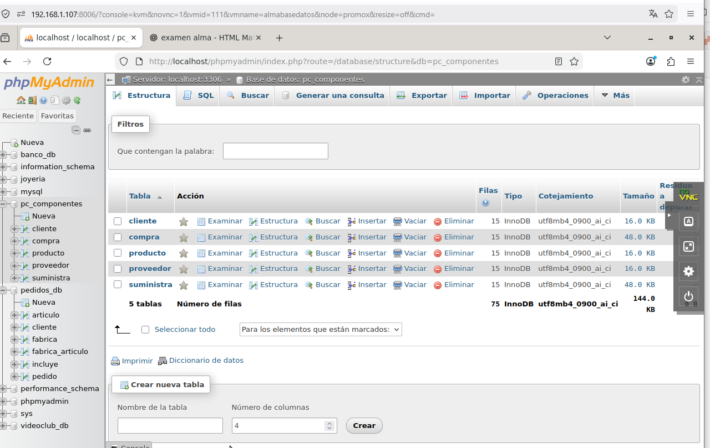

Resumen final de la práctica
A lo largo de esta unidad se ha trabajado el paso del modelo Entidad-Relación
a modelo relacional y su posterior implementación en MySQL mediante phpMyAdmin.
Partiendo del Ejercicio 1, se ha establecido la base conceptual necesaria
para comprender la transformación de entidades, atributos y relaciones en tablas,
claves primarias y claves foráneas.
A partir de este modelo inicial, se han desarrollado correctamente los siguientes casos prácticos:
- Ejercicio 2 – Joyería:
Se han definido entidades como titulares, clientes, empleados y joyerías,
estableciendo relaciones 1:N y N:M mediante claves foráneas y tablas intermedias.
- Ejercicio 3 – Pedidos:
Se ha trabajado con relaciones complejas incluyendo atributos en relaciones,
como la cantidad en pedidos, implementando correctamente tablas intermedias.
- Ejercicio 4 – Banco:
Se han modelado múltiples relaciones (cliente, cuenta, préstamo, sucursal),
destacando la correcta gestión de claves foráneas y relaciones N:M.
- Ejercicio 5 – Videoclub:
Se ha implementado un modelo más avanzado con herencia (personas, actores, directores)
y múltiples relaciones entre entidades, consolidando todos los conceptos aprendidos.
En todos los casos se ha realizado:
- ✔ Creación de tablas en phpMyAdmin
- ✔ Definición de claves primarias
- ✔ Establecimiento de relaciones mediante claves foráneas
- ✔ Inserción de datos de prueba (15 registros por tabla)
- ✔ Verificación del funcionamiento mediante consultas
Como resultado, se ha conseguido trasladar correctamente distintos modelos E/R
a bases de datos reales, comprendiendo la importancia del diseño previo antes
de la implementación.
Captura final del conjunto de ejercicios

Captura ABD24: Vista general en phpMyAdmin con todas las bases de datos y tablas creadas correspondientes a los ejercicios realizados.
Esta práctica permite afianzar los conocimientos fundamentales de bases de datos,
siendo un paso clave en el desarrollo de aplicaciones reales.